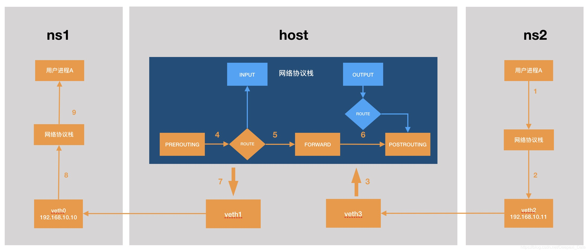
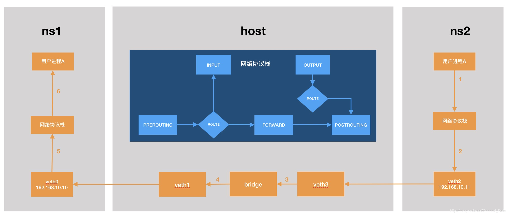

Iproute2 is a collection of utilities for controlling TCP / IP networking and traffic control in Linux. Of which the most important are ip and tc. ip controls IPv4 and IPv6 configuration and tc stands for traffic control.
ip： show / manipulate routing, network devices, interfaces ,tunnels and so on
ip commands acts upon one or more ip objects. An ip object represents a specific component of the networking system, such as the routing table. Here is a list of some of the most important ip objects, with the shortcuts in parentheses.
- link (l): network device.
- route (r): routing table entry.
- address (a): protocol (IP or IPv6) address on a device.
- neighbor (n): manage ARP or NDISC ( Ipv6 Neighbor Discovery)cache entries.
- netns - manage network namespaces.
Some of the objects in the ip command do not map perfectly to the terminology used in more casual discussions about networking. For instance, the term link often refers to a connection between two systems. The link ip object is usually called an interface.
Most ip commands follow this format:
ip [options] OBJECT COMMAND
- The ip command name.
- Zero or more options.
- The name of the “ip object”, for example,
linkorroute. Each object is associated with an abbreviation. For instance, thelinkobject can be abbreviated asl.ip l showandip link showboth refer to the same command. - The command,
showfor example, along with any parameters.
Here are some of the more useful ip options.
- -a: Processes all objects, provided the command supports the option.
- -d: Adds extra details to the output.
- -f: Specifies the protocol family. Some common families have their own shortcuts. -4 is a shortcut for IPv4, -6 denotes IPv6, and M indicates MPLS.
- -j: Displays the output in JSON format.
- -p: Presents the output in a more readable format.
- -s: Displays extra statistics, including packets transferred and received. The
-s -soption displays even more information. - -t: Includes the timestamp in the output.
addr object
The addr object allows users to list the IP addresses associated with each link, including the system address. It is also used to add, modify, and remove addresses.
ip addr show
displays the addresses for every link configured on the system.
ip addr show eth0
displays the addresses for a particular link
The -br option simplifies the display to the state and IP addresses.
ip -br addr show
root@sypc:~/c++# ip -br addr show
lo UNKNOWN 127.0.0.1/8 ::1/128
eth0 UP 172.21.117.12/20 fe80::215:5dff:fef5:a472/64
docker0 DOWN 172.17.0.1/16 2001:db8:1::1/64 fe80::1/64
To add an IP address to an existing link/interface, use the addr add command. The format for the command is ip addr add ADDRESS/NETMASK dev LINK_ID. Separate the IP address and the netmask using the / symbol.
ip addr add 127.255.255.255/16 dev lo
To remove an address from a link, use the addr delete command.
ip addr delete 127.255.255.255/16 dev lo
To configure the address as a broadcast address, use the keyword brd.
ip addr add 172.31.255.255 brd + dev eth1
link object
The link object can access and configure information about the network interfaces on the system. It is used to view the status of a network device, or set the administrative state to up or down.
view information about all network interfaces on the server
ip link show
The command shows the state, MTU, and MAC address for each link object amongst other information.
1: lo: <LOOPBACK,UP,LOWER_UP> mtu 65536 qdisc noqueue state UNKNOWN mode DEFAULT group default qlen 1000
link/loopback 00:00:00:00:00:00 brd 00:00:00:00:00:00
2: eth0: <BROADCAST,MULTICAST,UP,LOWER_UP> mtu 1500 qdisc mq state UP mode DEFAULT group default qlen 1000
link/ether f2:3c:93:60:50:30 brd ff:ff:ff:ff:ff:ff
When the -br option is added, ip only displays the most important information.
ip -br link show
lo UNKNOWN 00:00:00:00:00:00 <LOOPBACK,UP,LOWER_UP>
eth0 UP f2:3c:93:60:50:30 <BROADCAST,MULTICAST,UP,LOWER_UP>
To only show information about links that are operationally active, append the keyword up.
ip link show up
show information about a specific link
ip link show eth0
Add the -s option to see the link/interface statistics.
ip -s link show eth0
2: eth0: <BROADCAST,MULTICAST,UP,LOWER_UP> mtu 1500 qdisc mq state UP mode DEFAULT group default qlen 1000
link/ether 00:15:5d:f5:a4:72 brd ff:ff:ff:ff:ff:ff
RX: bytes packets errors dropped missed mcast
750681 1305 0 0 0 753
TX: bytes packets errors dropped carrier collsns
79488 326 0 0 0 0
Use the -s -s double flag to see even more comprehensive statistics, including information about the various errors.
root@sypc:~/c++# ip -s -s link show eth0
2: eth0: <BROADCAST,MULTICAST,UP,LOWER_UP> mtu 1500 qdisc mq state UP mode DEFAULT group default qlen 1000
link/ether 00:15:5d:f5:a4:72 brd ff:ff:ff:ff:ff:ff
RX: bytes packets errors dropped missed mcast
751061 1309 0 0 0 757
RX errors: length crc frame fifo overrun
0 0 0 0 0
TX: bytes packets errors dropped carrier collsns
79488 326 0 0 0 0
TX errors: aborted fifo window heartbt transns
0 0 0 0 1
Modify the status of any network interface using the ip link set command. Use the keyword up to enable an interface and the keyword down to disable it.
ip link set eth1 down
ip link set eth1 up
Use the following command to set the maximum transmission unit (MTU) size for the link.
sudo ip link set mtu 1600 eth1
route object
The route object allows users to view the routing tables. It is also used to add and delete a route.
To view all routes installed in the routing database, use the ip route show command.
root@sypc:~/c++# ip route show
default via 172.21.112.1 dev eth0 proto kernel
172.17.0.0/16 dev docker0 proto kernel scope link src 172.17.0.1 linkdown
172.21.112.0/20 dev eth0 proto kernel scope link src 172.21.117.12
To add a new route, use the ip route add command.
There are two ways to add a route.
For the first option, specify the IP address and mask of the remote network, and the interface used to access it. The following example adds a new route to eth0.
ip route add 192.168.20.0/24 dev eth0
For the second method, use the via keyword to specify a gateway.
ip route add 192.168.20.0/24 via 178.79.148.1
To delete a route, use the ip route delete command. This command only accepts an IP address.
ip route delete 192.168.20.0/24
neighbor object
The neigh command operates on the ARP and NDISC entries for the server’s neighbors. The neighbor command displays an address and state for each entry. An entry is REACHABLE if it is both valid and reachable, and PERMANENT if it never expires. STALE entries are valid but unreachable, and entries in the DELAY state are not yet validated. The neigh command can also edit neighbor information.
To see all the neighbors that the system is aware of, use ip neigh show.
178.79.148.1 dev eth0 lladdr 00:00:0c:9f:f0:02 REACHABLE
fe80::1 dev eth0 lladdr 00:00:0c:9f:f0:02 router STALE
dev eth0的意思是通过这个接口可达的邻居，而不是邻居接口。
这两条arp cache信息是同一个router的，mac地址是一样的，只不过一条是ipv4地址的，一条是ipv6地址的
ARP information can be added and removed using ip neigh add and ip neigh delete commands.
The delete command is useful for flushing stale ARP or NDISC information. The neigh add command can add a permanent ARP entry between two nodes that are continually communicating and have fixed IP and MAC addresses. However, a static ARP entry can cause problems if the information ever changes. Use caution when adding any entries to these tables.
To add a permanent ARP entry for a neighbor, use the following command.
ip neigh add 192.168.100.100 lladdr 16:12:34:56:78:90 dev eth0 nud perm
dev eth0specifies the network device (interface) that is used to reach the neighbor. I
nud perm: nud stands for 'Neighbour Unreachability Detection', and perm means the entry is permanent. A permanent entry doesn't undergo reachability detection and does not expire from the ARP table.
ip neigh show
178.79.148.1 dev eth0 lladdr 00:00:0c:9f:f0:02 REACHABLE
192.168.100.100 dev eth0 lladdr 16:12:34:56:78:90 PERMANENT
fe80::1 dev eth0 lladdr 00:00:0c:9f:f0:02 router STALE
Use ip neigh delete, along with the address and interface, to delete a route.
ip neigh delete 192.168.100.100 dev eth0
netns object
network namespace 是linux内核提供的用于实现网络虚拟化的重要功能对象，它能创建多个隔离的网络空间，一个独立的网络空间内的防火墙、网卡、路由表、协议栈都是独立的。不管是虚拟机还是容器，当运行在独立的命名空间时，就像是在一台单独的主机一样。
ip命令中用于操作网络命名空间的命令是ip netns，用help来查看一下子命令有哪些
root@sypc:~# ip netns help
Usage: ip netns list
ip netns add NAME
ip netns attach NAME PID
ip netns set NAME NETNSID
ip [-all] netns delete [NAME]
ip netns identify [PID]
ip netns pids NAME
ip [-all] netns exec [NAME] cmd ...
ip netns monitor
ip netns list-id [target-nsid POSITIVE-INT] [nsid POSITIVE-INT]
root@sypc:~# ip netns add ns1
root@sypc:~# ip netns list
ns1
#ip netns exec nsname xxx //在某个网络空间中执行xxx命令
root@sypc:~# ip netns exec ns1 ip link
1: lo: <LOOPBACK> mtu 65536 qdisc noop state DOWN mode DEFAULT group default qlen 1000
link/loopback 00:00:00:00:00:00 brd 00:00:00:00:00:00
2: tunl0@NONE: <NOARP> mtu 1480 qdisc noop state DOWN mode DEFAULT group default qlen 1000
link/ipip 0.0.0.0 brd 0.0.0.0
root@sypc:~# ip netns exec ns1 ip route
Error: ipv4: FIB table does not exist.
Dump terminated
当我们在主机上执行ip netns add ns1后 ，实际是在/var/run/netns下创建了一个名为ns1的文件
root@sypc:~# ls /var/run/netns
ns1
进入网络空间
root@sypc:~# nsenter --net=/var/run/netns/ns1
root@sypc:~# ip link
1: lo: <LOOPBACK> mtu 65536 qdisc noop state DOWN mode DEFAULT group default qlen 1000
link/loopback 00:00:00:00:00:00 brd 00:00:00:00:00:00
2: tunl0@NONE: <NOARP> mtu 1480 qdisc noop state DOWN mode DEFAULT group default qlen 1000
link/ipip 0.0.0.0 brd 0.0.0.0
#退出
root@sypc:~# exit
logout
veth设备
link object可以处理的网络设备除了网卡之外，还有其他的网络设备，比如bridge,veth
veth是linux的一种虚拟网络设备，它有点类似于两张网卡中间用一条网线连着，veth设备总是成对出现，通常用来连接不同网络命名空间（下面开始简称NS），一端连着NS1的内核协议栈，另一端连着NS2的内核协议栈，一端发送的数据会立刻被另一端接收。
下面我们创建如下的网络，包括两个NS: ns1, ns2. 每个ns和主机之间用一对veth设备连接。所有的ns之间网络互通，ns和外界网络互通

首先看下我当前网络的路由
root@sypc:~# ip route
default via 172.21.112.1 dev eth0 proto kernel
172.17.0.0/16 dev docker0 proto kernel scope link src 172.17.0.1 linkdown
172.21.112.0/20 dev eth0 proto kernel scope link src 172.21.117.12
- proto kernel The proto kernel part of the output indicates that the route was installed by the kernel during autoconfiguration. In the context of routing tables, 'proto' stands for 'protocol'. Different protocols can install routes in the routing table. When it says 'proto kernel', it means this route was installed automatically by the system's kernel, not by a routing daemon or manually by an administrator.
- scope link The scope link in the routing table refers to the scope of the destinations that are directly reachable from the network interface. In other words, these are the destinations that can be reached by sending a packet to a link layer address (like an Ethernet MAC address) without needing to go through a router. It's used for directly connected networks, where your computer can reach all the hosts in the network directly without going through a router.
- src IP means that this IP will be used as the source IP for outgoing packets on this route.
veth 设备的配置
#创建veth设备
root@sypc:~# ip link add veth0 type veth peer name veth1
#创建ns空间
root@sypc:~# ip netns add ns1
#将一端放到ns1网络空间中
root@sypc:~# ip link set veth0 netns ns1
#赋予ip地址
root@sypc:~# ip netns exec ns1 ip addr add 192.168.10.10/24 dev veth0
#启动veth设备
root@sypc:~# ip netns exec ns1 ip link set veth0 up
root@sypc:~# ip link set veth1 up
到这里我们查看下当前主机的路由表和ns1的路由表
#主机的路由没有变化，因为我们没有给veth1设置地址，也并不需要
root@sypc:~# ip route
default via 172.21.112.1 dev eth0 proto kernel
172.17.0.0/16 dev docker0 proto kernel scope link src 172.17.0.1 linkdown
172.21.112.0/20 dev eth0 proto kernel scope lin
# ns1多了一条路由，但没有默认路由
root@sypc:~# ip netns exec ns1 ip route
192.168.10.0/24 dev veth0 proto kernel scope link src 192.168.10.10
目前也就只能ns1 ping自己能ping的通，前提是打开lo网卡
#ns1中lo网卡打开
root@sypc:~# ip netns exec ns1 ip link set lo up
root@sypc:~# ip netns exec ns1 ping 192.168.10.10
PING 192.168.10.10 (192.168.10.10) 56(84) bytes of data.
64 bytes from 192.168.10.10: icmp_seq=1 ttl=64 time=0.018 ms
64 bytes from 192.168.10.10: icmp_seq=2 ttl=64 time=0.038 ms
64 bytes from 192.168.10.10: icmp_seq=3 ttl=64 time=0.054 ms
^C
--- 192.168.10.10 ping statistics ---
3 packets transmitted, 3 received, 0% packet loss, time 2066ms
我们给ns1加一条默认路由,下一跳路由的地址是随便写的
root@sypc:~# ip netns exec ns1 ip route add 0.0.0.0/0 via 169.2.2.2 dev veth0 onlink
root@sypc:~# ip netns exec ns1 ip route
default via 169.2.2.2 dev veth0 onlink
192.168.10.0/24 dev veth0 proto kernel scope link src 192.168.10.10
- onlink The onlink option in the ip route add command forces the kernel to assume that the gateway is directly attached to the interface, even if the network prefix of the gateway's IP address doesn't match the network prefix of the interface's IP address. In other words, it tells the kernel to not check if the gateway 169.2.2.2 is directly connected to the network interface veth0, it just assumes it is. This can be useful in certain situations where you know the gateway is reachable even if it doesn't look like it based on the IP addresses.
我们再给主机添加一条路由
root@sypc:~# ip route add 192.168.10.10 dev veth1 scope link
root@sypc:~# ip route
default via 172.21.112.1 dev eth0 proto kernel
172.17.0.0/16 dev docker0 proto kernel scope link src 172.17.0.1 linkdown
172.21.112.0/20 dev eth0 proto kernel scope link src 172.21.117.12
192.168.10.10 dev veth1 scope link
这时候我们再去ping 主机，比如ping 172.21.112.1 ,发现还是ping不通,原因是主机返回的icmp包根据主机的路由，直接从veth1接口二层转发，但是在主机上我们并不知道veth0的MAC地址，所以我们打开veth1的arp代理，将veth1的mac地址返回，这样就能ping通了
root@sypc:~# echo 1 > /proc/sys/net/ipv4/conf/veth1/proxy_arp
root@sypc:~# ip netns exec ns1 ping 172.17.0.1
PING 172.17.0.1 (172.17.0.1) 56(84) bytes of data.
64 bytes from 172.17.0.1: icmp_seq=1 ttl=64 time=317 ms
64 bytes from 172.17.0.1: icmp_seq=2 ttl=64 time=0.041 ms
但这时候我们依然不能从ns1内部ping通外网，我们需要对该网段的地址做SNAT转换。我们首先看下docker的网段是如何转换的
root@sypc:~# iptables -t nat -S POSTROUTING
-P POSTROUTING ACCEPT
-A POSTROUTING -s 172.17.0.0/16 ! -o docker0 -j MASQUERADE
我们添加192.168.10.0/24 网段的SNAT转换
root@sypc:~# iptables -t nat -A POSTROUTING -s 192.168.10.0/24 -j MASQUERADE
同时，filter表的FORWARD链的默认策略是DROP，目前只配置了docker的转发策略
root@sypc:~# iptables -S FORWARD
-P FORWARD DROP
-A FORWARD -j DOCKER-USER
-A FORWARD -j DOCKER-ISOLATION-STAGE-1
-A FORWARD -o docker0 -m conntrack --ctstate RELATED,ESTABLISHED -j ACCEPT
-A FORWARD -o docker0 -j DOCKER
-A FORWARD -i docker0 ! -o docker0 -j ACCEPT
-A FORWARD -i docker0 -o docker0 -j ACCEPT
我们需要配置veth1的转发
root@sypc:~# iptables -A FORWARD -i eth0 -o veth1 -j ACCEPT
root@sypc:~# iptables -A FORWARD -o eth0 -i veth1 -j ACCEPT
最后，确保ip_forward的配置被打开了
root@sypc:~# cat /proc/sys/net/ipv4/ip_forward
1
这时候可以ping通外网了
root@sypc:~# ip netns exec ns1 ping 180.101.50.242
PING 180.101.50.242 (180.101.50.242) 56(84) bytes of data.
64 bytes from 180.101.50.242: icmp_seq=1 ttl=51 time=27.7 ms
64 bytes from 180.101.50.242: icmp_seq=2 ttl=51 time=10.3 ms
^C
下面按照同样的方法配置ns2的网络
root@sypc:~# ip link add veth2 type veth peer name veth3
root@sypc:~# ip netns add ns2
root@sypc:~# ip link set veth2 netns ns2
root@sypc:~# ip netns exec ns2 ip addr add 192.168.10.11/24 dev veth2
root@sypc:~# ip netns exec ns2 ip link set veth2 up
root@sypc:~# ip link set veth3 up
root@sypc:~# ip netns exec ns2 ip link set lo up
root@sypc:~# ip netns exec ns2 ip route add 0.0.0.0/0 via 169.2.2.2 dev veth2 onlink
root@sypc:~# ip route add 192.168.10.11 dev veth3 scope link
root@sypc:~# echo 1 > /proc/sys/net/ipv4/conf/veth3/proxy_arp
root@sypc:~# iptables -A FORWARD -i eth0 -o veth3 -j ACCEPT
root@sypc:~# iptables -A FORWARD -o eth0 -i veth3 -j ACCEPT
最后ns1和ns2之间还是不通，因为没有配置veth1和veth3之间的转发规则
root@sypc:~# iptables -A FORWARD -i veth1 -o veth3 -j ACCEPT
root@sypc:~# iptables -A FORWARD -o veth1 -i veth3 -j ACCEPT
现在互相可以ping通了
root@sypc:~# ip netns exec ns1 ping 192.168.10.11
PING 192.168.10.11 (192.168.10.11) 56(84) bytes of data.
64 bytes from 192.168.10.11: icmp_seq=1 ttl=63 time=0.053 ms
64 bytes from 192.168.10.11: icmp_seq=2 ttl=63 time=0.063 ms
^C
root@sypc:~# ip netns exec ns2 ping 192.168.10.10
PING 192.168.10.10 (192.168.10.10) 56(84) bytes of data.
64 bytes from 192.168.10.10: icmp_seq=1 ttl=63 time=0.092 ms
64 bytes from 192.168.10.10: icmp_seq=2 ttl=63 time=0.069 ms
^C
bridge设备
Linux bridge即linux虚拟网桥，工作方式类似于物理的网络交换机，工作在二层时，能够转发以太网报文，能够学习MAC地址与端口的映射关系
下面我们搭建如下的网络

主机路由目前如下
root@sypc:~/c++# ip route
default via 172.21.112.1 dev eth0 proto kernel
172.17.0.0/16 dev docker0 proto kernel scope link src 172.17.0.1 linkdown
172.21.112.0/20 dev eth0 proto kernel scope link src 172.21.117.12
root@sypc:~# ip link add br0 type bridge
root@sypc:~# ip link set br0 up
root@sypc:~# ip netns add ns1
root@sypc:~# ip netns add ns2
root@sypc:~# ip link add veth0 type veth peer name veth1
root@sypc:~# ip link add veth2 type veth peer name veth3
root@sypc:~# ip link set veth0 netns ns1
root@sypc:~# ip link set veth2 netns ns2
root@sypc:~# ip netns exec ns1 ip addr add 192.168.10.10/24 dev veth0
root@sypc:~# ip netns exec ns2 ip addr add 192.168.10.11/24 dev veth2
root@sypc:~# ip netns exec ns1 ip link set veth0 up
root@sypc:~# ip netns exec ns2 ip link set veth2 up
root@sypc:~# ip link set veth1 master br0
root@sypc:~# ip link set veth3 master br0
root@sypc:~# ip link set veth1 up
root@sypc:~# ip link set veth3 up
当前主机路由，ns1路由，ns2路由如下所示
root@sypc:~/c++# ip route
default via 172.21.112.1 dev eth0 proto kernel
172.17.0.0/16 dev docker0 proto kernel scope link src 172.17.0.1 linkdown
172.21.112.0/20 dev eth0 proto kernel scope link src 172.21.117.12
root@sypc:~/c++# ip netns exec ns1 ip route
192.168.10.0/24 dev veth0 proto kernel scope link src 192.168.10.10
root@sypc:~/c++# ip netns exec ns2 ip route
192.168.10.0/24 dev veth2 proto kernel scope link src 192.168.10.11
就这样两个NS就可以相互PING通了，因为是相同网段，所以暂不需要默认网关，又因为linux bridge会广播ARP请求，NS1的veth0能通过ARP广播拿到NS2中veth2的MAC地址。
但是发现非常神奇的ping不通，研究半天发现是我电脑默认打开了这个配置
root@sypc:~/c++# cat /proc/sys/net/bridge/bridge-nf-call-iptables
1
这个配置打开后，即使是网桥的二层转发的数据包，也要过一下防火墙。我们防火墙的FORWARD默认策略是DROP的。先将该配置关闭，可以ping通了
root@sypc:~/c++# echo 0 > /proc/sys/net/bridge/bridge-nf-call-iptables
root@sypc:~/c++# ip netns exec ns1 ping 192.168.10.11
PING 192.168.10.11 (192.168.10.11) 56(84) bytes of data.
64 bytes from 192.168.10.11: icmp_seq=1 ttl=64 time=0.034 ms
64 bytes from 192.168.10.11: icmp_seq=2 ttl=64 time=0.068 ms
^C
root@sypc:~/c++# ip netns exec ns2 ping 192.168.10.10
PING 192.168.10.10 (192.168.10.10) 56(84) bytes of data.
64 bytes from 192.168.10.10: icmp_seq=1 ttl=64 time=0.034 ms
64 bytes from 192.168.10.10: icmp_seq=2 ttl=64 time=0.063 ms
再给主机添加192.168.10.0/24网段的路由
root@sypc:~# ip route add 192.168.10.0/24 dev br0 scope link
ns1和ns2添加默认路由
#下一跳路由随便写的，并不需要
root@sypc:~# ip netns exec ns1 ip route add 0.0.0.0/0 via 169.2.2.2 dev veth0 onlink
root@sypc:~# ip netns exec ns2 ip route add 0.0.0.0/0 via 169.2.2.2 dev veth2 onlink
再打开br0的arp proxy
root@sypc:~# echo 1 > /proc/sys/net/ipv4/conf/br0/proxy_arp
现在ns1，ns2和主机之间也互通了
#主机ping ns2
root@sypc:~/c++# ping 192.168.10.11
PING 192.168.10.11 (192.168.10.11) 56(84) bytes of data.
64 bytes from 192.168.10.11: icmp_seq=1 ttl=64 time=72.4 ms
64 bytes from 192.168.10.11: icmp_seq=2 ttl=64 time=0.039 ms
#主机ping ns1
root@sypc:~/c++# ping 192.168.10.10
PING 192.168.10.10 (192.168.10.10) 56(84) bytes of data.
64 bytes from 192.168.10.10: icmp_seq=1 ttl=64 time=33.4 ms
64 bytes from 192.168.10.10: icmp_seq=2 ttl=64 time=0.041 ms
^C
#ns1 ping 主机
root@sypc:~/c++# ip netns exec ns1 ping 172.17.0.1
PING 172.17.0.1 (172.17.0.1) 56(84) bytes of data.
64 bytes from 172.17.0.1: icmp_seq=1 ttl=64 time=0.050 ms
64 bytes from 172.17.0.1: icmp_seq=2 ttl=64 time=0.076 ms
^C
#ns2 ping 主机
root@sypc:~/c++# ip netns exec ns2 ping 172.17.0.1
PING 172.17.0.1 (172.17.0.1) 56(84) bytes of data.
64 bytes from 172.17.0.1: icmp_seq=1 ttl=64 time=0.048 ms
64 bytes from 172.17.0.1: icmp_seq=2 ttl=64 time=0.073 ms
^C
当然现在ns1, ns2和外网是不通的
配置192.168.10.0/24网段的SNAT转换
root@sypc:~/c++# iptables -t nat -A POSTROUTING -s 192.168.10.0/24 -j MASQUERADE
配置br0和eth0的FORWARD策略
root@sypc:~# iptables -A FORWARD -i eth0 -o br0 -j ACCEPT
root@sypc:~# iptables -A FORWARD -o eth0 -i br0 -j ACCEPT
可以ping通了
root@sypc:~/c++# ip netns exec ns1 ping 180.101.50.188
PING 180.101.50.188 (180.101.50.188) 56(84) bytes of data.
64 bytes from 180.101.50.188: icmp_seq=1 ttl=50 time=34.1 ms
64 bytes from 180.101.50.188: icmp_seq=2 ttl=50 time=30.8 ms
^C
root@sypc:~/c++# ip netns exec ns2 ping 180.101.50.188
PING 180.101.50.188 (180.101.50.188) 56(84) bytes of data.
64 bytes from 180.101.50.188: icmp_seq=1 ttl=50 time=31.9 ms
64 bytes from 180.101.50.188: icmp_seq=2 ttl=50 time=32.1 ms
^C
bridge实现的ns联通，走的是网桥的二层转发. 如果关闭掉主机的forward功能，ns之间依然是联通的
root@sypc:~# echo 0 > /proc/sys/net/ipv4/ip_forward
root@sypc:~# ip netns exec ns1 ping 192.168.10.11
PING 192.168.10.11 (192.168.10.11) 56(84) bytes of data.
64 bytes from 192.168.10.11: icmp_seq=1 ttl=64 time=0.208 ms
64 bytes from 192.168.10.11: icmp_seq=2 ttl=64 time=0.209 ms
64 bytes from 192.168.10.11: icmp_seq=3 ttl=64 time=0.092 ms
ns和主机之间也是联通的，但是ns无法联通外网了，因为访问外网需要将ip包转发到eth0处理
如果我们需要让bridge二层转发的数据包也过一下主机的防火墙，可以打开/proc/sys/net/bridge/bridge-nf-call-iptables配置
root@sypc:~# echo 1 > /proc/sys/net/bridge/bridge-nf-call-iptables
root@sypc:~# iptables -P FORWARD DROP
#现在ping不通了
root@sypc:~# ip netns exec ns1 ping 192.168.10.11
PING 192.168.10.11 (192.168.10.11) 56(84) bytes of data.
^C
--- 192.168.10.11 ping statistics ---
2 packets transmitted, 0 received, 100% packet loss, time 1003ms
开启了这个参数，数据包还是没有经过主机的协议栈的三层处理，只是linux bridge的__br_forward方法中显式地调用了NF_HOOK(NFPROTO_BRIDGE, NF_BR_FORWARD,net, NULL, skb, indev, skb->dev,br_forward_finish)